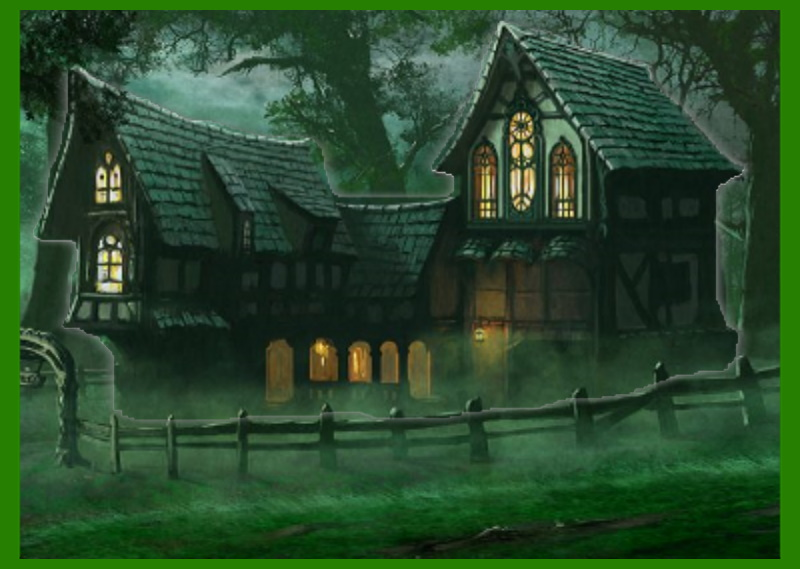

În urma investigațiilor realizate anterior am aflat mai multe despre viața marelui dramaturg, însă pe parcursul carierei s-au remarcat și anumite motive fantastice în operele sale. În tema anchetei vieții lui, dorim să realizăm o anchetă asupra stilului fantastic al prozatorului luând ca operă reprezentativă renumita "La hanul lui Mânjoală".
Sub influențele curentului realist, creația impresionează atât prin modul inedit al prezentării acțiunii cât și prin aspectul exhaustiv al descrierii personajelor. Fiind un bun cunoscător al ironiei, Caragiale se folosește de lecțiile deprinse din schițele sale pentru a contura o realitate deja învățată.
Tema este dragostea sau, cu o sintagmă împrumutată de la Constantin Negruzzi, păcatele tinereții. În jurul acestui sentiment acțiunea ia amploare, personajele păcătuind în încercarea satisfacției personale. Astfel, putem spune că o poveste de dragoste se înfiripă între cei doi inițial necunoscuți, fiecare aparținând unei lumi diferite, cea reală și cea fantastică.
"La hanul lui Mânjoală" prezintă în prim-plan adevărul mitic ancestral că practicile vrăjitorești sunt pedepsite. Povestirea debutează cu Fănică, personajul principal al operei, care se îndreaptă spre Popeștii-de-sus spre a se întâlni cu familia viitoarei sale soții. Totul pare normal, însă pe parcursul drumului, elementele fantastice se intensifică. Hanul lui Mânjoală ne este prezentat printr-un scurt flashback al cucoanei Marghioala, iar astfel planurile real-fantastic se suprapun.
Vanitatea cucoanei Marghioala îl abate pe tânărul fecior de la idealurile sale creștine, aducând intriga și seducția în povestire. Elementele ce întrețin iubirea pe parcursul creației se află în antiteză cu creștinismul lui Fănică. Secvența descriptivă a camerei cucoanei este una importantă n conturarea planului fantastic, acest plan stând la baza realismului caracteristic lui Caragiale.
În final, se poate remarca comedia lui Caragiale, opera finalizându-se într-o notă ușor ironică. Fiind cu toții adunați și de mult trecut evenimentele fantastice legate de han, Fănică și socrul său, pocovnicul Iordache, stau în jurul focului și povestesc. Socrul îl avertizează pe Fănică că practicile vrăjitorești sunt mereu pedepsite, transmițându-i cum hangița a fost mistuită de flăcări în incendiul de la han.
În opinia noastră, opera "La hanul lui Mânjoală" de Ion Luca Caragiale este o nuvelă care merită citită, aceasta impresionând prin concordanța dintre tragicul și comicul acțiunii, domenii în care marele dramaturg și-a dovedit măestria de-a lungul atâtor decenii.
recenzie realizată de Florescu Raul și Dediu Ștefan